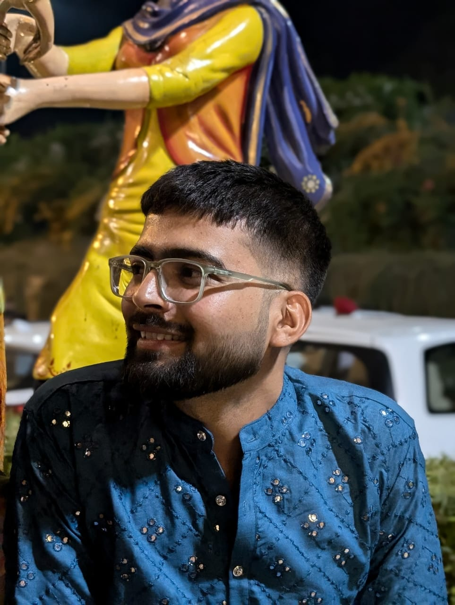

Current Focus
Machine Learning + Data Analytics
Building practical models and dashboards from real datasets.
Data Science Portfolio
Ashish Raj
I'm Ashish Raj, a 3rd year B.Tech student majoring in Data Science. I enjoy solving real-world problems through analytics, machine learning, and clear data storytelling.

Current Focus
Building practical models and dashboards from real datasets.
Availability
Looking for data science and analytics opportunities.
I am Ashish Raj, a 3rd year B.Tech student majoring in Data Science, with a strong interest in solving practical problems using data. I enjoy converting raw datasets into meaningful insights through structured analysis and clear storytelling.
My current focus is on strengthening core skills in Python, SQL, machine learning, and statistics while building real-world projects. I like learning by doing, whether it is building prediction models, visual dashboards, or end-to-end analytics workflows that can support better decision-making.
I am actively looking for opportunities where I can contribute, collaborate, and grow as a Data Scientist through internships and impactful project work.
"Good decisions come from good data and clear thinking."
2023 - 2027
CGPA 7.05
Currently in 3rd year, building strong knowledge in machine learning, statistics, database systems, and applied analytics at university level with project-based learning.
At Lovely Professional University, I am actively working on academic and personal projects in data analysis and model development. My coursework and practice include Python-based problem solving, SQL queries for data extraction, and visualization-driven storytelling for better decision support.
2021 - 2023
Marks 75%
Studied PCM with Computer Science, strengthening fundamentals in mathematics, logical reasoning, and analytical problem solving.
During my 12th at Bihar Public School, I developed consistent study habits and a strong quantitative base that later helped me transition smoothly into engineering and data science subjects. This stage built my confidence in tackling technical concepts.
2019 - 2021
Marks 80%
Built core academic discipline and developed early interest in science, technology, and structured thinking.
In 10th at DAV Public School, I strengthened my fundamentals across mathematics and science while improving communication, time management, and overall learning discipline, which became a strong base for my higher studies.

Successfully completed the skill development course "From Data to Insights: A Hands-On Approach to Data Science" and secured Grade A. This experience strengthened my practical understanding of data cleaning, insight extraction, and communicating results for real decision-making scenarios.
Feb 2025 - Mar 2025

Tech Stack: Excel, SQL, Pandas, NumPy, Scikit-learn, Matplotlib, Seaborn, Power BI
Applied RFM + K-Means on 10,000+ records to identify high-value customer groups and reduce marketing spend by 20%.
GitHubMay 2025 - Jun 2025

Tech Stack: HTML, CSS, JavaScript, PHP, XAMPP
Built a real-time chatbot for order tracking and updates, reducing repetitive customer support queries by 60-70%.
GitHubJul 2025 - Aug 2025

Tech Stack: Node.js, Socket.IO, Express.js, MongoDB, REST APIs
Developed a 1:1 WebSocket chat system handling 1,000+ messages daily with JWT auth and ~40% faster message retrieval.
GitHub
Session: Jan-Apr 2025 | Consolidated score: 57%

Awarded on August 13, 2025 to Ashish Raj.

Professional certificate track completed by Ashish Raj.
Download my resume for a complete overview of my academics, technical skills, projects, and internship experience in Data Science.
Download ResumeOpen to internships, collaborations, and data-driven project opportunities.